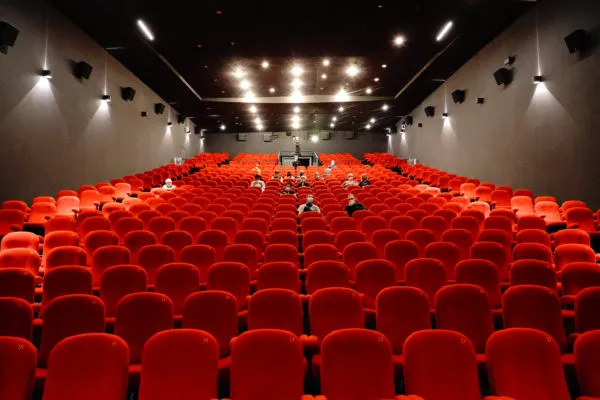

Empty rooms, a forgotten sector
Covid without a parachute
French cinemas suffered a 55% loss of attendance between 2019 and 2021. This decline is due in particular to Covid 19, which literally put the world on pause for almost an entire year, causing a real freefall in admissions between 2019 and 2020. With the dark theaters closed for 300 days, they are struggling to re-interest the French.
Asian people with FFp2 mask
Despite a significant increase in 2021, we can see that the cinema interests the French less, especially between 25 and 40 years (boxofficepro.fr). To know the reasons of this decrease, the electronic magazine Vertigo questioned more than 1000 people between May 2 and May 6, 2022 on their habits of the reopening of the dark rooms on May 19, 2021. While more than half said they had returned to the cinema, 48% had changed the way they went, 34% said they went less frequently and finally 14% said they no longer went at all.
There are several reasons other than the pandemic for this decline in attendance.
Lots of wads of banknotes
Increasingly expensive seats...
Of the people who said that they do not go to the cinema anymore, 36% put forward the price of the tickets as the main reason. Indeed, the price of an average ticket is 7.06 euros while an Amazon Prime Video subscription costs 5.99, Disney + 8.99 euros or Netflix 13.46 euros. Despite the fact that for Disney + and Netflix, it is a little more expensive than a ticket, it remains that their catalogs are much more extensive than the catalog offered each week in theaters. Moreover, on these platforms, the price does not change according to the number of films watched.

Almost empty movie theater
... for less and less good movies.
The quality of the films is also a big factor in the decline of cinema popularity. We have all heard the famous phrase "there is nothing left in the cinema". This is what many French people think, 23% of those who did not return to the cinema after the closing of theaters.
 FR
FR


 THE PLACE
THE PLACE